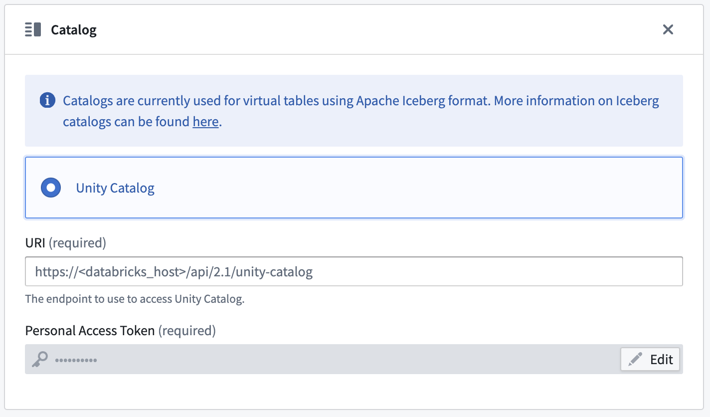

Connect Foundry to OneLake â, Azure Data Lake Storage Gen2 (ADLS Gen2), and other eligible Azure products using Azure Blob Filesystem (ABFS) â. The ABFS connector allows files to be read into Foundry and written from Foundry to Azure.
:::callout{theme="warning"} Connections to Azure Data Lake Storage Gen1 are not supported. :::
| Capability | Status |
|---|---|
| Exploration | ð¢ Generally available |
| Bulk import | ð¢ Generally available |
| Incremental | ð¢ Generally available |
| Media sets | ð¢ Generally available |
| Virtual tables | ð¢ Generally available |
| Export tasks | ð¡ Sunset |
| File exports | ð¢ Generally available |
The connector can transfer files of any type into Foundry datasets. File formats are preserved and no schemas are applied during or after the transfer. Apply any necessary schema to the output dataset, or write a downstream transformation to access the data.
There is no limit to the size of transferable files. However, network issues can result in failures of large-scale transfers. In particular, syncs running on a Foundry worker that take more than two days to run will be interrupted. To avoid network issues, we recommend using smaller file sizes and limiting the number of files that are ingested in every execution of the sync. Syncs can be scheduled to run frequently.
:::callout{theme="warning"} We recommend using a Foundry worker with direct connection policies with the ABFS connector to simplify setup and configuration. :::
Learn more about setting up a connector in Foundry.
To import data, the connector must list the filesystem contents and read the file contents in Azure. This behavior can be achieved through authorization patterns of the principal associated with the provided connection credentials.
Storage Blob Data Reader â role on the container where the data is located.Read ACL on the ingest files, and the Execute ACL on all path directories, from the container root to the file location.Learn more about access control in ADLS Gen2 â.
The ABFS connector supports the following configurations options for authentication, listed from most to least recommended:
Client credentials â rely on an app registration â (Service Principal) in Entra ID. This method is preferred for all direct connections. Configure client credential authentication with the following fields:
| Option | Required? | Description |
|---|---|---|
Client endpoint |
Yes | The authentication endpoint for the connection. This typically takes the form https://login.microsoftonline.com/<directory-id>/oauth2/token, where <directory-id> is the subscription ID. See Azure's official documentation â for more details. |
Client ID |
Yes | The ID of the app registration; also called Application ID. |
Client secret |
Yes | The secret generated in the app registration. |
Shared access signature (SAS) â authentication uses tokens that provide short-lived and tightly scoped credentials. These tokens are most useful when a service can generate them as needed and distribute them to clients who use them for a very limited time.
| Option | Required? | Description |
|---|---|---|
Blob SAS token |
Yes | The shared access signature token. |
The connector requires a static SAS token and will store a long-lived token to authenticate with the storage account.
:::callout{theme="warning"} Once the SAS token expires, your syncs will stop working until it is manually renewed. Therefore, we strongly recommend against using SAS tokens and encourage you to use a different authentication solution. :::
Follow the Azure guide â to obtain SAS tokens.
Example token:
/container1/dir1?sp=r&st=2023-02-23T17:53:28Z&se=2023-02-24T01:53:28Z&spr=https&sv=2021-12-02&sr=d&sig=1gF9B%2FOnEmtYeDl6eB9tb0va1qpSBjZw3ZJuW2pMm1E%3D&sdd=1
We generally recommend generating SAS tokens at the storage container level. Find the storage container at the container view in the Azure portal (under Settings > Shared access tokens). If it is necessary to generate a SAS token at the storage account level (under Security > Networking > Shared access signature at the storage account view in the Azure portal), then the minimal set of permissions are as follows:
"Allowed services": "Blob""Allowed resource types": "Container" + "Object""Allowed permissions": "Read" + "List":::callout{theme="warning"} To connect to Azure Blob Storage with SAS tokens, you must specify the directory â resource where the blobs are stored. :::
When generating a SAS token, be sure to set the following parameters:
Signed protocol: We recommend setting spr â to mandate https for the connections.
Signed resource: Change the value â based on the resource type to which access is being granted.
:::callout{theme="warning"}
If the signed resource in use is a specified directory, ensure that the directory depth â is also specified. We recommend setting a high depth value to allow the connection to pull data from nested directories (for example, sdd=100).
:::
The username/password â authentication method follows OAuth protocol. Credentials are generated using the Azure page for your tenant (for example, https://login.microsoftonline.com/<tenant-id>/oauth2/token). Replace the <tenant-id> with the ID of the tenant to which you are connecting.
Set the following configurations:
| Option | Required? | Description |
|---|---|---|
Client endpoint |
Yes | The client endpoint from the OAuth configuration. |
Username |
Yes | The user's email address. |
Proxy password |
Yes | The password token. |
The refresh token â authorization method follows OAuth protocol. Learn how to generate a refresh token using the Azure documentation â.
Set the following configurations:
| Option | Required? | Description |
|---|---|---|
Client ID |
Yes | The client ID; can be found in Microsoft Entra ID. |
Refresh Token |
Yes | The refresh token. |
Every Azure storage account comes with two shared keys â. However, we do not recommend using shared keys in production as they are scoped at the storage account level rather than the container level. Shared keys have admin permissions by default, and rotating them is a manual operation.
To obtain a shared key, navigate to the desired storage account in the Azure portal and select Access keys under the Security + networking section.
| Option | Required? | Description |
|---|---|---|
Account key |
Yes | The account access key. |
The Azure workload identity federation â authorization method follows the OpenID Connect (OIDC) protocol. Follow the displayed source system configuration instructions to set up workload identity federation. Review our documentation for details on how OIDC works with Foundry.
| Option | Required? | Description |
|---|---|---|
Tenant ID |
Yes | The Tenant ID can be obtained from Microsoft Entra ID â. |
Client ID |
Yes | The client ID can be found in Microsoft Entra ID. |
:::callout{theme="warning" title="Legacy"} This authentication method is available only for legacy agent worker sources. For new sources, use client credentials. :::
Azure managed identities â do not require credentials to be stored in Foundry. The managed identity used for connecting to data must have appropriate permissions on the underlying storage.
| Option | Required? | Description |
|---|---|---|
Tenant ID |
No | The Tenant ID can be obtained from Microsoft Entra ID â. |
Client ID |
No | If multiple managed identities (assigned by either the system or user) were attached to the virtual machine (VM) where the agent is running, provide the ID that should be used to connect to storage. |
:::callout{theme="warning"} The managed identity authentication method relies on a local REST endpoint available to all processes on the virtual machine (VM). The method only works if the connections are made through an agent that is deployed on a VM inside the same Azure tenant. :::
When running the Azure connection in Foundry, you need to set up network access for Foundry to communicate with the source. This is a two-step process:
port 443. For example, if you are connecting to abfss://file_system@account_name.dfs.core.windows.net, the domain of the storage account is account_name.dfs.core.windows.net. The Data Connection application suggests appropriate egress policies based on the connection details provided in the source.:::callout{theme="neutral"} If you are setting up access to an Azure storage bucket hosted in the same Azure region as a Foundry enrollment, you will need to set a different networking configuration than the above, via PrivateLink. If this is the case, contact your Palantir administrator for assistance. :::
The connector has the following additional configuration options:
| Option | Required? | Description |
|---|---|---|
Root directory |
Yes | The directory from which to read / write data. |
Catalog |
No | Configure a catalog for tables stored in this storage container. See Virtual tables for more details. |
:::callout{theme="neutral"} ABFS is compatible with OneLake, and Microsoft OneLake URIs are supported. :::
The following are supported formats for the root directory:
abfss://file_system@account_name.dfs.core.windows.net/<directory>/
abfss://file_system@onelake.dfs.fabric.microsoft.com/path/to/directory/
Examples:
abfss://file_system@account_name.dfs.core.windows.net/ â to access all contents of that file system.abfss://file_system@account_name.dfs.core.windows.net/path/to/directory/ â to access a particular directory.abfss://file_system@onelake.dfs.fabric.microsoft.com/path/to/directory/ â to access a particular directory with Microsoft OneLake.:::callout{theme="neutral"} If you are authenticating with SAS tokens and accessing blob storage, you must specify a directory in the root directory configuration. All contents must be in a subfolder of the specified directory to ensure proper access. :::
The ABFS connector uses the file-based sync interface.
To export to ABFS, first enable exports for your ABFS connector. Then, create a new export.
:::callout{theme="warning"} Export tasks are a legacy feature that we do not recommend for new implementations. For new exports, please use the recommended export workflow. This documentation is provided for users who are still using existing export tasks. :::
To begin exporting data, you must configure an export task. Navigate to the Project folder that contains the connector to which you want to export. Right select on the connector name, then select Create Data Connection Task.
In the left panel of the Data Connection view:
Source name matches the connector you want to use.Input named inputDataset. The input dataset is the Foundry dataset being exported.Output named outputDataset. The output dataset is used to run, schedule, and monitor the task.:::callout{theme="neutral"} The labels for the connector and input dataset that appear in the left side panel do not reflect the names defined in the YAMl. :::
Use the following options when creating the export task YAML:
| Option | Required? | Description |
|---|---|---|
directoryPath |
Yes | The directory where files will be written. The path must end with a trailing /. |
excludePaths |
No | A list of regular expressions; files with names matching these expressions will not be exported. |
rewritePaths |
No | See section below for more information. |
uploadConfirmation |
No | When the value is exportedFiles, the output dataset will contain a list of files that were exported. |
createTransactionFolders |
No | When enabled, data will be written to a subfolder within the specified directoryPath. Every subfolder will have a unique name for every exported transaction in Foundry and is based on the time the transaction was committed in Foundry. |
incrementalType |
No | For datasets that are built incrementally, set to incremental to only export transactions that occurred since the previous export. |
flagFile |
No | See section below for more information. |
spanMultipleViews |
No | If true, multiple transactions in Foundry will be exported at once. If false, a single build will export only one transaction at a time. If incremental is enabled, the files from the oldest transaction will be exported first. |
rewritePathsIf the first key matches the filename, the capture groups in the key will be replaced with the value. The value itself can have extra sections to add metadata to the filename.
If the value contains:
${dt:javaDateExpression}: This part of the value will be replaced by the timestamp of when the file is being exported. The javaDateExpression follows the DateTimeFormatter â pattern.${transaction}: This part of the value will be replaced with the Foundry transaction ID of the transaction that contains this file.${dataset}: This part of the value will be replaced with the Foundry dataset ID of the dataset that contains this file.Example:
Consider a file in a Foundry dataset called "spark/file_name", in a transaction with ID transaction_id and dataset ID dataset_id. If you use the expression fi.*ame as the key and file_${dt:DD-MM-YYYY}-${transaction}-${dataset}_end as a value, when the file is written to Azure it will be stored as spark/file_79-03-2023-transaction_id-dataset_id_end.
The connector can write an empty flag file to Azure storage once all data is copied for a given build. The empty file signifies that the contents are ready for consumption and will no longer be modified. The flag file will be written to the directoryPath. However, if createTransactionFolders is enabled, a flag file will be made for every folder to which content was written. If flag files are enabled, and the flag file is called confirmation.txt, all flag files will be written at once after files being exported in the build are written
:::callout{theme="neutral"} The flag files are written at the end of a build, not when a subfolder has been exported. :::
If the files in Azure are newer than the flag file, this normally indicates that the previous export was not successful or an export is in progress for that folder.
After you configure the export task, select Save in the upper right corner.
This section provides additional details around using virtual tables from an Azure Data Lake Storage Gen 2 (Azure Blob Storage) source. This section is not applicable when syncing to Foundry datasets.
The table below highlights the virtual table capabilities that are supported for ADLS Gen2.
| Capability | Status |
|---|---|
| Bulk registration | ð´ Not available |
| Automatic registration | ð´ Not available |
| Table inputs | ð¢ Generally available: Avro â, Delta â, Iceberg â, Parquet â in Code Repositories, Pipeline Builder |
| Table outputs | ð¢ Generally available: Avro â, Delta â, Iceberg â, Parquet â in Code Repositories, Pipeline Builder |
| Incremental pipelines | ð¢ Generally available for Delta tables: APPEND only (details)ð¢ Generally available for Iceberg tables: APPEND only (details)ð´ Not available for Parquet tables |
| Compute pushdown | ð´ Not available |
Consult the virtual tables documentation for details on the supported Foundry workflows where tables stored in ADLS Gen2 can be used as inputs or outputs.
When using virtual tables, remember the following source configuration requirements:
client credentials, username/password or workload identity federation. Other credential options are not supported when using virtual tables.To enable incremental support for pipelines backed by virtual tables, ensure that Change Data Feed â is enabled on the source Delta table. The current and added read modes in Python Transforms are supported. The _change_type, _commit_version and _commit_timestamp columns will be made available in Python Transforms.
An Iceberg catalog is required to load virtual tables backed by an Apache Iceberg table. To learn more about Iceberg catalogs, see the Apache Iceberg documentation â. All Iceberg tables registered on a source must use the same Iceberg catalog.
By default, tables will be created using Iceberg metadata files in S3. A warehousePath indicating the location of these metadata files must be provided when registering a table.
Unity Catalog â can be used as an Iceberg catalog when using Delta Universal Format (UniForm) in Databricks. To learn more about this integration, see the Databricks documentation â. The catalog can be configured in the Connection details tab on the source. You will need to provide the endpoint and a personal access token to connect to Unity Catalog. Tables should be registered using catalog_name.schema_name.table_name naming pattern.
Polaris â can be used as an Iceberg catalog for tables stored in Azure Data Lake Storage Gen2. The catalog can be configured in the Connection details tab on the source.

Incremental support relies on Iceberg Incremental Reads â and is currently append-only. The current and added read modes in Python Transforms are supported.
Virtual tables using Parquet rely on schema inference. At most 100 files will be used to determine the schema.
Use the following sections to troubleshooting known errors.
Ensure that you are using the DFS location and not the blob storage.
For example:
# Correct:
abfsRootDirectory: 'abfss://<account_name>.dfs.core.windows.net/'
# Incorrect:
abfsRootDirectory: 'abfss://<account_name>.blob.core.windows.net/'
magritteabfs.source.org.apache.hadoop.fs.FileAlreadyExistsException: Operation failed:
"This endpoint does not support BlobStorageEvents or SoftDelete. Please disable these
account features if you would like to use this endpoint.", 409, HEAD,
https://STORAGE_ACCOUNT_NAME.dfs.core.windows.net/CONTAINER_NAME/?
upn=false&action=getAccessControl&timeout=90
This error is thrown because Hadoop ABFS currently does not support â accounts with SoftDelete enabled. The only solution is to disable this feature for the storage account.
There is a known issue â with the Client Credentials authentication mechanism. Service Principal client secrets containing a + or a / will not work if set up using the Data Connection interface. Resolve this issue by creating new credentials without a + or /. Reach out to your Palantir representative if this issue continues.
While troubleshooting, we recommend separating access problems from network problems. To do this, first test access to the source data independently (outside of Data Connection). Then, verify that the managed identity â can be used to successfully establish a connection from the Data Connection VM to the storage account:
# Grab a new token using the local metadata endpoint.
# If you do not have jq on the box, you can manually export the value of the access_token key from
# the API call result to the TOKEN environment variable.
export TOKEN=`curl 'http://IP_ADDRESS_OF_VM/metadata/identity/oauth2/token?api-version=2018-02-01
&resource=https%3A%2F%2Fstorage.azure.com%2F' -H Metadata:true | jq '.access_token' | sed 's/"//g'`
# Be sure the token is properly set; this should be an OAuth2 token. For example `eyJ0e...` (no quotes).
echo $TOKEN
# List the contents of the container root.
curl -XGET -H "x-ms-version: 2018-11-09" -H "Authorization: Bearer $TOKEN"
"https://STORAGE_ACCOUNT_NAME.dfs.core.windows.net/CONTAINER_NAME?resource=filesystem&recursive=false"
# Display the contents of a file inside the container.
curl -XGET -H "x-ms-version: 2018-11-09" -H "Authorization: Bearer $TOKEN"
"https://STORAGE_ACCOUNT_NAME.dfs.core.windows.net/CONTAINER_NAME/path/to/file.txt"
For an Azure Managed Identity, this message likely means there is an issue with the metadata endpoint used to retrieve a token on the VM. The VM itself may be in a bad state, or the managed identity may not be attached to the VM yet. To debug this, attempt to retrieve a token from the VM by using the cURL command in the section above.
If the page contains the text For support, please email us at..., the error may come from a network issue. Be sure the proxies are properly configured between Foundry and the VM on which the agent is installed, and between the agent VM and the source. If the agent appears healthy in the interface and you are able to access the files on Azure from the VM using a terminal, file an issue to for additional assistance.
:::callout{theme="neutral"} The ABFS plugin does not manage proxy settings and relies on agent settings. :::
This error usually happens when a SAS token has been generated with insufficient permissions. When trying to create a sync, a preview of the entire source would appear as expected; however, a preview with scoped down filters would result in the error. Refer to the shared access signature section for instructions on how to generate SAS tokens.
When using export-abfs-task, if files are being exported to root/opt/palantir/magritte-bootvisor/var/data/processes/bootstrapper/ rather than the specified directoryPath, be sure that you have a trailing / at the end of your directory URL.
For example:
# Correct:
abfsRootDirectory: 'abfss://STORAGE_ACCOUNT_NAME.dfs.core.windows.net/'
# Incorrect:
abfsRootDirectory: 'abfss://STORAGE_ACCOUNT_NAME.blob.core.windows.net'